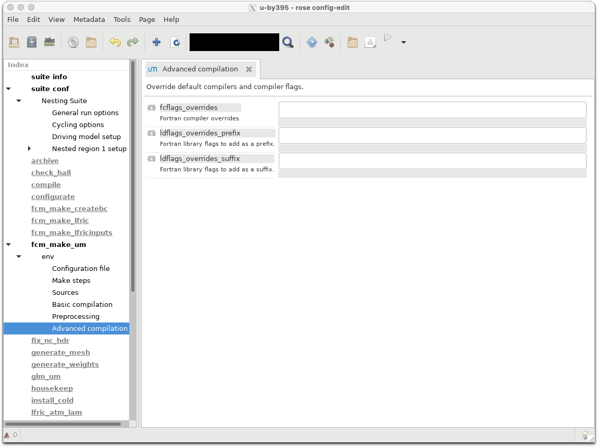
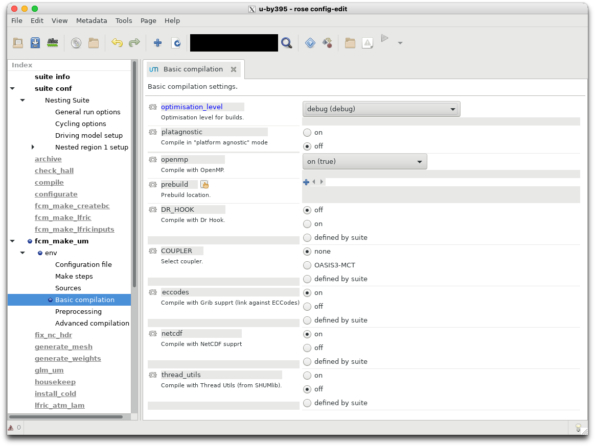
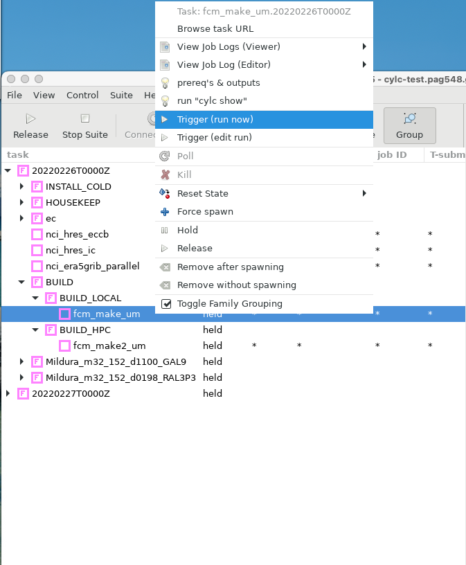
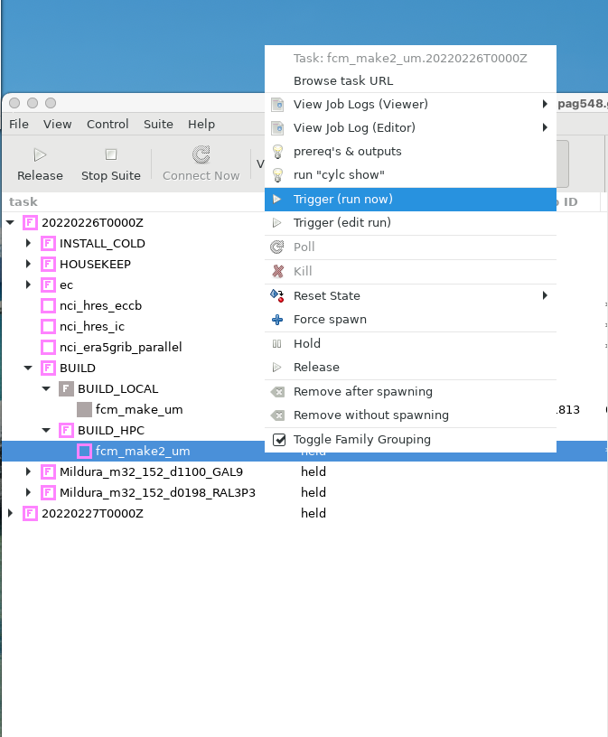

Custom UM builds for rAM3#
The Regional Nesting Suite (RNS) contains the ability to build a custom UM executable. Let’s work through the steps required to compile a local exectuable for your own needs.
Setting the build flag#
In the rose edit GUI, change the BUILD_MODE option in the General Run options to Build new executable.
You can also change
BUILD_MODE="new"
in rose-suite.conf.
You may need to check the definition of HPC_HOST in ~/roses/<suite-id>/site/nci-gadi/suite-adds.rc
from
{% HPC_HOST = ‘localhost’ % }
to
{% HPC_HOST = ‘gadi.nci.org.au’ % }
Now run your suite hold all tasks.
$ rose suite-run -- --hold
You will notice a new family of tasks in the GUI: BUILD. This task family contains two tasks : fcm_make_um and fcm_make2_um.
Let’s see these how tasks work.
fcm_make_um#
If you look at the rose application configuration file for this task:
$ more app/fcm_make_um/rose-app.conf
meta=um-fcm-make/vn13.5
[env]
COUPLER=none
DR_HOOK=false
casim_rev=um13.5
casim_sources=fcm:casim.xm/branches/dev/paulfield/vn1.3_drop_agg_limit_and_switch@11187
compile_atmos=preprocess-atmos build-atmos
!!compile_createbc=preprocess-createbc build-createbc
!!compile_crmstyle_coarse_grid=preprocess-crmstyle_coarse_grid build-crmstyle_coarse_grid
!!compile_pptoanc=preprocess-pptoanc build-pptoanc
compile_recon=preprocess-recon build-recon
!!compile_scm=preprocess-scm build-scm
!!compile_sstpert_lib=preprocess-sstpert_lib build-sstpert_lib
!!compile_wafccb_lib=preprocess-wafccb_lib build-wafccb_lib
config_revision=@vn13.5
config_root_path=fcm:um.xm_tr
config_type=atmos
eccodes=true
extract=extract
fcflags_overrides=
gwd_ussp_precision=double
etc.
It contains all the settings required to build version 13.5 of the UM.
For example, if you wanted to add information to the Fortran compiler flag, you could type something like
fcflags_overrides=-march=broadwell -axSKYLAKE-AVX512,CASCADELAKE,SAPPHIRERAPIDS
to give your UM better performance on other Intel architecture.
You can also access these features in rose edit. Select the fcm_make_um task on the left panel, wait for the option menu to appear, and then click env -> Advanced compilation

The task also contains default settings for optimisation levels. These are available in the env -> Basic Compilation menu.

Let’s trigger this task.

After completion you will notice that your directory ~/cylc-run/<suite-id>/share/fcm_make_um exists and contains various files and directories.
The source code for the UM (and its sub components, such as JULES) now lie in ~/cylc-run/<suite-id>/share/fcm_make_um/extract
So if you wish to add or change any files in the UM source tree, make them in
~/cylc-run/<suite-id>/share/fcm_make_um/extract/um/src
So this task does not build the UM, it just downloads source from the external repositories hosted by the UK Met Office.
Check that your configuration options (e.g. compilation flags) are reflected in the contents of ~/cylc-run/<suite-id>/share/fcm_make_um/fcm-make2.cfg.
For example, if you selected to compile with debug (debug) optimisation level, the following entries should exist in your fcm-make2.cfg file
build.prop{class, fc.flags} = -i8 -r8 -mcmodel=medium -std08 -g -traceback -assume nosource_include -O2 -fp-model precise -qopenmp
fcm_make2_um#
Once you’ve made the required changes to your source files and compilation flags, you can then compile your code by triggering fcm_make2_um.

When this task finishes, your job.out file should contain output similar to the following:
[info] sources: total=2909, analysed=2848, elapsed-time=12.0s, total-time=2.1s
[info] target-tree-analysis: elapsed-time=0.1s
[info] install targets: modified=84, unchanged=0, failed=0, total-time=0.2s
[info] process targets: modified=2757, unchanged=0, failed=0, total-time=45.1s
[info] TOTAL targets: modified=2841, unchanged=0, failed=0, elapsed-time=8.5s
[done] make 2 preprocess-atmos# 22.8s
[init] make 2 build-atmos # 2026-03-02T07:11:19Z
[info] sources: total=2909, analysed=2909, elapsed-time=4.9s, total-time=22.8s
[info] target-tree-analysis: elapsed-time=10.8s
[info] compile targets: modified=2644, unchanged=0, failed=0, total-time=2910.2s
[info] compile+ targets: modified=2609, unchanged=0, failed=0, total-time=4.8s
[info] install targets: modified=2, unchanged=0, failed=0, total-time=0.0s
[info] link targets: modified=1, unchanged=0, failed=0, total-time=10.0s
[info] TOTAL targets: modified=5256, unchanged=0, failed=0, elapsed-time=593.8s
[done] make 2 build-atmos # 599.2s
[init] make 2 preprocess-recon# 2026-03-02T07:21:18Z
[info] sources: total=2059, analysed=2011, elapsed-time=4.6s, total-time=1.5s
[info] target-tree-analysis: elapsed-time=0.1s
[info] install targets: modified=77, unchanged=0, failed=0, total-time=0.2s
[info] process targets: modified=1927, unchanged=0, failed=0, total-time=39.6s
[info] TOTAL targets: modified=2004, unchanged=0, failed=0, elapsed-time=8.6s
[done] make 2 preprocess-recon# 13.9s
[init] make 2 build-recon # 2026-03-02T07:21:32Z
[info] sources: total=2059, analysed=2059, elapsed-time=4.6s, total-time=15.3s
[info] target-tree-analysis: elapsed-time=1.6s
[info] compile targets: modified=595, unchanged=0, failed=0, total-time=300.4s
[info] compile+ targets: modified=575, unchanged=0, failed=0, total-time=0.8s
[info] install targets: modified=2, unchanged=0, failed=0, total-time=0.0s
[info] link targets: modified=1, unchanged=0, failed=0, total-time=2.2s
[info] TOTAL targets: modified=1173, unchanged=0, failed=0, elapsed-time=60.5s
[done] make 2 build-recon # 65.5s
[done] make 2 # 702.1s
2026-03-02T07:22:40Z INFO - succeeded
This denotes that two UM executables have been built; one each for atmospheric simulations and reconfiguration.
You can check their location and modified times in these directories:
~/cylc-run/<suite-id>/share/fcm_make_um/build-atmos/bin~/cylc-run/<suite-id>/share/fcm_make_um/build-recon/bin
Detailed logging information during the build process is available at ~/cylc-run/<suite-id>/share/fcm_make_um/fcm-make2.log. Check this file to ensure any modifications you made to the standard build process, e.g.
Altering the compilation flags
Including new source files,
have been incorporated into the final build process. In this example, I can check the compilation flags match those specified in the fcm-make2.cfg file.
$ grep std08 ~/cylc-run/u-by395/share/fcm_make_um/fcm-make2.log | more
[info] shell(0 1.1) mpif90 -oo/compute_chunk_size_mod.o -c -I./include -i8 -r8 -mcmodel=medium -std08 -g -tr
aceback -assume nosource_include -O2 -fp-model precise -qopenmp /home/548/pag548/cylc-run/u-by395/share/fcm_m
ake_um/preprocess-atmos/src/um/src/control/misc/compute_chunk_size_mod.F90
Any new source files should have their object files located in ~/cylc-run/<suite-id>/share/fcm_make_um/build-atmos/o
Using your new executables#
You can continue to run the suite to completion if you like, as all UM related jobs now have added the path to your new executables. For example, here is the job command for the UM reconfiguration task.
rose task-run -v --opt-conf-key='(nci-gadi)' --path="share/fcm_make_um/*/bin" ${TASK_RUN_EXTRA_OPTS:-} --command-key=recon
And for the UM forecast task.
Alternatively, you can stop the suite now, and edit the rose-suite.conf file value the BUILD_MODE to “custom” and specify the location of the new executables to an EXEC_DIR. Or, using the rose edit GUI, you can change BUILD_MODE to Use some other executable on disk.
You can copy the build-atmos and build-recon directories to another location (e.g <path>/Debug_EXES) and set EXEC_DIR to this path. This will ensure your executables are not over-written by future build tasks using this suite.